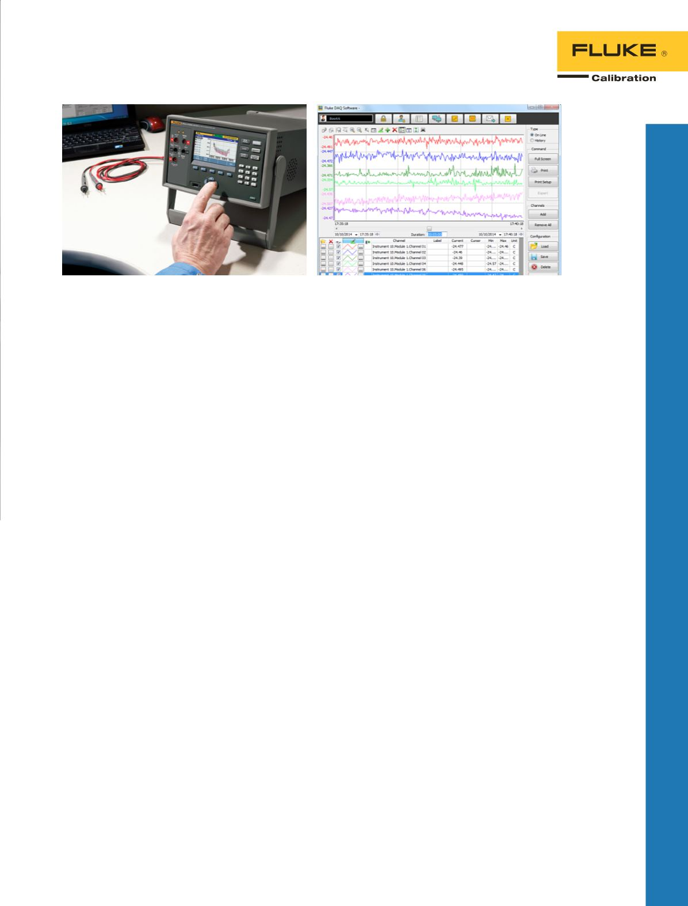

8808A
8845A/8846A
271
80/81
397
290
280
Universal-Messgeräte
Präzisionsmultimeter,
6,5-stellig, 8845A/8846A
Genauigkeit und Flexibilität für
Labor- oder Systemanwendungen.
•
6,5-stellige Auflösung
•
Basisgenauigkeit bei Gleich-
spannung bis zu 0,0024 %
•
Duales Display
•
Strombereich von 100 μA bis 10
A, mit einer Auflösung von bis zu
100 pA
•
Breiter Ohm-Bereich von 10 Ω
bis 1 GΩ mit einer Auflösung von
10 μΩ
•
2 x 4-Widerstandsmessfunktion
für 4-Leiter-Messung
•
Beide Modelle messen Frequenz
und Zeitraum.
•
Das 8846A misst außerdem
Kapazität und Temperatur.
•
Port für USB-Speicherstick
(8846A)
•
Fluke 45- und Agilent
34401A-Emulation
•
Grafikdisplay
•
Papierloser Aufzeichnungsmodus,
Statistiken, Histogramm von
Trendplot™
•
CAT I 1000 V, CAT II 600 V
•
Drei Jahre Gewährleistung
Digitalmultimeter 8808A
Vielseitiges Multimeter für
Fertigungs-, Entwicklungs- und
Kundendienstanwendungen.
•
5,5-stellige Auflösung
•
Grundgenauigkeit bei Gleich-
spannung von 0,015 %
•
Duales Display
•
Spezielle Gleichspannungs-
Leckstrommessung
•
2 x 4-Widerstandsmessfunktion
für 4-Leiter-Messung
•
Sechs spezielle Tasten für
schnellen Zugriff auf die
Messgerätkonfigurationen
•
Hi/Lo-Grenzwertvergleich für
Gut/Schlecht-Prüfung
•
Drei Jahre Gewährleistung
Funktionspulsgeneratoren
80/81
50 Mhz-Funktions-/
Impulsgenerator, ideal für
den Laboreinsatz oder für
automatisierte Testsysteme
•
Impuls-/Funktionsgenerator
Modell 81
•
Funktionsgenerator Modell 80
•
Leistungsstark
•
AM, FM, VCO und
Phasenkopplung/Versatzkontrolle
•
Automatische Kalibrierung
•
Ideal für den Einsatz im
Labor sowie für automatische
Testsysteme
•
Emulationsmodus HP 8116A
(nur 81)
DDS-Funktionsgenerator 271
mit ARB
Hochleistungs-Funktionsgenerator.
•
10-MHz-DDS-Funktionsgenerator
mit hoher Stabilität
•
Arbiträrfunktion mit Speicherung
für fünf benutzerdefinierte
Signalformen
•
Mehrere Standardsignalformen
und komplexe Signalformen
abrufbereit aus dem internen
Speicher
•
Umfassende Modulations-
funktionen: Sweep, AM,
Torsteuerung, Auslöser/Burst,
FSK und Hop
•
GPIB- und RS-232-Schnittstellen
Universeller Signalgenerator
397
Universelle 125-MS/s-
Hochleistungssignalgeneratoren.
•
Unvergleichliche Kombination
aus universellem Generator
und Synthesizer
•
Variable Leistung
•
Hohe Auflösung und breites
Frequenzspektrum
•
Überragendes
Preis-Leistungs-Verhältnis
Signalgeneratoren
der Serie 290
Ein-, Zwei- oder Vierkanal-100-
MS/s-Funktionsgeneratoren
•
Arbiträre 12-Bit-Signalfunktion
mit 100 MS/s
•
1-M-Punkt-Signalspeicher
•
40-MHz-Funktionsgenerator bei
Verwendung von DDS (50 MHz
für Rechtecksignale)
•
Generator zur Erzeugung von
10-ns-Impulsmuster
•
Signalabfolge mit bis zu
1024 Segmenten
•
Unbegrenzte Signalspeicherung
mit CF
®
-Speicherkarte
•
Software „Waveform Manager
Plus“ für Windows
•
Zusätzlich zu RS-232 und GPIB
eine USB-Schnittstelle
Signalgeneratoren
der Serie 280
Leistungsfähiger
Funktionsgenerator für allgemeine
Anwendungen mit herausragendem
Preis-/Leistungsverhältnis.
•
1, 2 und 4 unabhängige oder
verbundene Kanäle
•
40 MS/s max.
Abtastgeschwindigkeit
•
16-MHz-Funktionsgenerator
•
10-MHz-Impulsgenerator
•
Generator für Impulszugmuster
•
Arbiträre Signalformen von bis
zu 65 k-Punkten
•
Leistungsstarke
Modulationsfunktionen
•
Integrierte Auslösergeneratoren
•
Software „Waveform Manager
Plus für Windows
®
“
•
Mehrere Standardsignalformen
abrufbereit aus dem
internen Speicher
•
RS-232- und GPIB-Schnittstellen
47
Datenerfassung